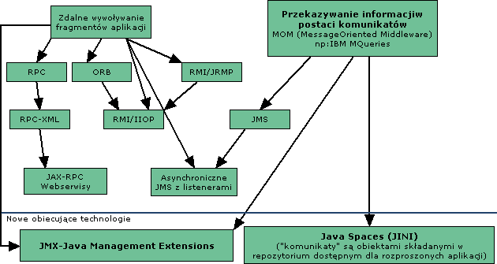
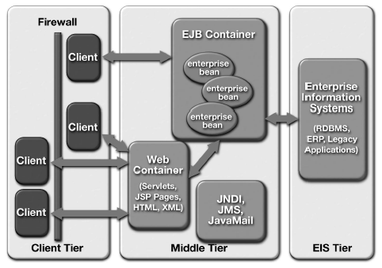
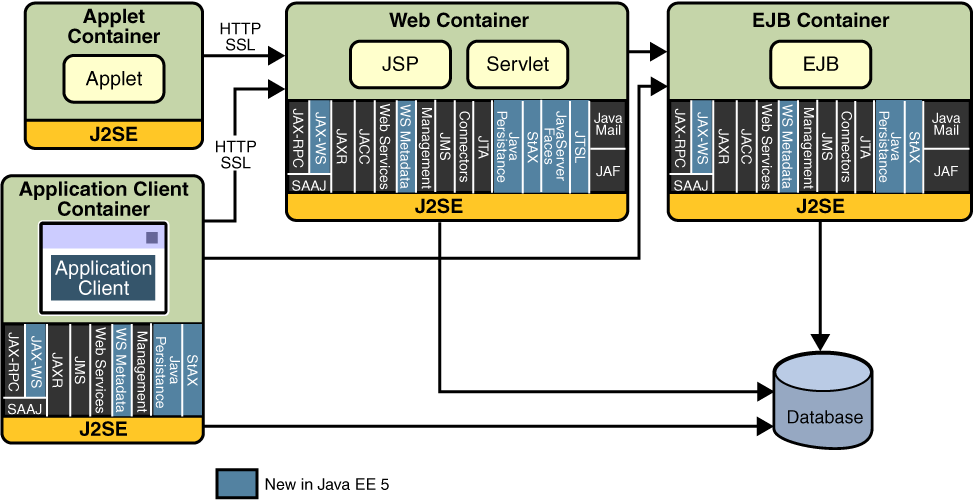
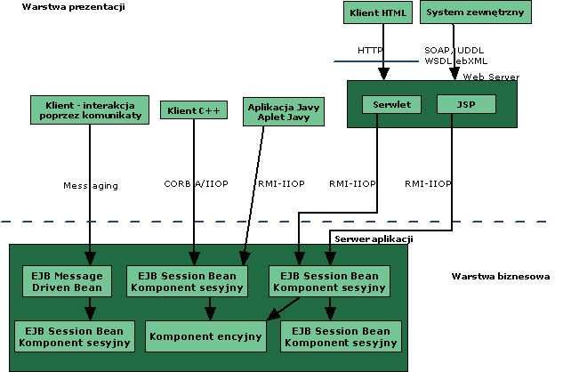
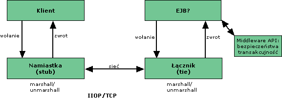
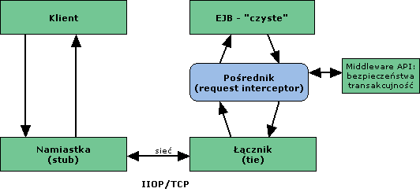
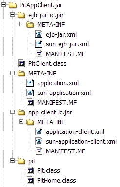
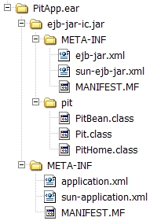
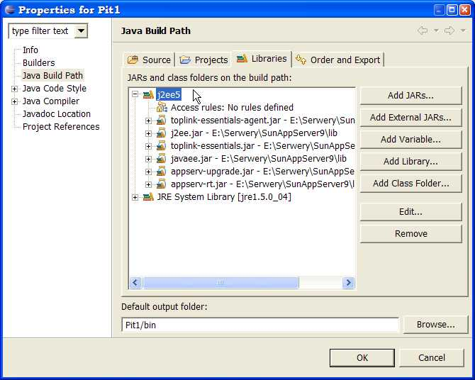
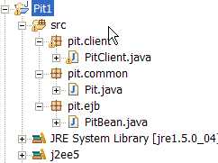

<
Wprowadzenie do
Enterprise Java Beans
Materia≥ zawiera wprowadzenie do EJB - czym sπ, jakie sπ ich
rodzaje. OprÛcz tego zapoznamy siÍ z ogÛlnym mechanizmem
dzia≥ania EJB, zwracajπc szczegÛlnπ uwagÍ na obiekty
poúredniczπce i interfejsy Home. Zostanie pokazany przyk≥ad
aplikacji, opracowanej w wersji EJB 2.1 . Specyfikacja EJB
3.0, znacznie u≥atwia sposÛb programowania EJB. Jednak
mechanizm dzia≥ania EJB (choÊ w nowej wersji moøe byÊ ukryty przed
programistπ) pozostaje ten sam i warto z nim - choÊby w zarysach siÍ
zapoznaÊ. Wyklad koÒczy omÛwienie najwaøniejszych cech nowszej i
wygodniejszej wersji EJB - EJB 3.
1. Potrzeba middleware - oprogramowania poúredniczπcego
W systemach rozproszonych, opartych na programowaniu komponentowym
i
architekturze n-warstwowej niezbÍdne jest oprogramowanie
poúredniczπce
(middleware), ktÛre m.in.:
- zapewnia odpowiedniπ komunikacjÍ miÍdzy warstwami,
- realizuje
komunikacjÍ pomiÍdzy rozproszonymi czÍúciami systemu
(m.in. zdalne wywo≥anie procedur, metod, obs≥uga komunikatÛw),
- zarzπdza
transakcjami,
- zapewnia niezawodnoúÊ (obs≥uga b≥ÍdÛw sieciowych,
klastering),
- zarzπdza dostÍpem (autoryzacja i uwierzytelnienie),
- pozwala
na ≥atwe, na logicznym poziomie identyfikowanie zasobÛw,
- zarzπdza
cyklem øycia komponentÛw (obiektÛw) - kiedy majπ powstawaÊ, kiedy majπ
ginπÊ itp.
- zarzπdza trwa≥oúciπ - utrwalanie komponentÛw,
opisujπcych stany systemu,
- zapewnia dynamiczne wdraøanie
komponentÛw (system w
trakcie dzia≥ania moøe zmieniaÊ swÛj kszta≥t i funkcjonalnoúÊ),
- umoøliwia
integracjÍ z innymi systemami (juø istniejπcymi w firmie).
Oczywiúcie, tworzπc duøe nowe systemy nie sposÛb tych wszystkich
problemÛw rozwiπzywaÊ od nowa i od nowa, pisaÊ w≥asny middleware
(koszt i czas). Od poczπtku lat 70-tych pojawia≥y siÍ wiÍc rÛøne
gotowe rozwiπzania - zarÛwno w postaci specyfikacji
standardÛw jak i gotowych produktÛw.
Przyk≥adowy problem:
- programy (aplikacje lub fragmenty aplikacji)
dzia≥ajπ rÛwnolegle (np. w sieci),
- jak z jednego programu
przekazaÊ informacje do innego?
- w szczegÛlnoúci jak z jednego
fragmentu programu spowodowaÊ wykonanie
innego
fragmentu, znajdujπcego siÍ w innym miejscu sieci (np. na innym
komputerze) ?
Rozwiπzania:
- Moøna napisaÊ serwer, ktÛry bÍdzie poúredniczy≥ miÍdzy
aplikacjami (to jest w pewnym sensie w≥asny middleware). Trzeba biedzie
przy tym
wymyúliÊ jakiú protokÛ≥ komunikacji (specyfikacja) i zapewniÊ
aby aplikacje do tej specyfikacji siÍ stosowa≥y. Czy warto? czasem dla
specyficznych drobnych problemÛw - tak. Ale nie jest to
ogÛlne rozwiπzanie.
- Moøna skorzystaÊ z gotowego middleware'u,
najlepiej takiego, ktÛry stanowi otwarty standard.
Wycinkowe spojrzenie na middleware (na bazie przyk≥adowego problemu)

Za chwilÍ zobaczymy jak korzystaÊ z niektÛrych wymienionych
standardÛw.
Do korzystania z middleware'u potrzebne sπ serwery (a zatem i
odpowiednie protoko≥y sπ zdefiniowane). Moøemy np. mieÊ serwer ORB,
serwer JMS, serwer JMX, serwer aplikacji web; uøywaÊ odpowiednich
protoko≥Ûw (np. transportowych: IIOP czy TCP/IP, wyøszego
poziomu - RMI itp.)
Zwykle wszystkie te serwery (a takøe ca≥a wspomniana wczeúniej
funkcjonalnoúÊ, dotyczπca np. bezpieczeÒstwa, trwa≥oúci,
transakcyjnoúci) jest zintegrowana w tzw. serwerach aplikacji.
Przyk≥adowe serwery aplikacji: IBM WebSphere, JBoss, BEA WebLogic,
Sun Java Application Server.
2. Architektura N-warstwowa, technologie i serwery
aplikacji w JEE
J2EE jest zestawem
protoko≥Ûw, serwisÛw i
interfejsÛw programistycznych (API) s≥uøπcych do tworzenia
n-warstwowych rozproszonych aplikacji biznesowych w oparciu o
paradygmaty programowania komponentowego, ≥atwego "ponownego uøycia" i
architektury zorientowanej na serwisy (SOA).
J2EE zapewnia w sposÛb modularny
wszystkie us≥ugi typu
"middleware", umoøliwiajπc jednoczeúnie ich ≥atwπ implementacjÍ i
integrowanie w rÛønych serwerach aplikacji. Serwery aplikacji
implementujπce serwisy, protoko≥y i interfejsy J2EE nazywane sπ
ogÛlnie serwerami J2EE.
Od strony uøytkownika J2EE jest otwartym, przenoúnym
standardem
tworzenia i wdraøania rozproszonych aplikacji biznesowych, zapewniajπc
przy tym ≥atwe w uøyciu úrodki skalowania aplikacji, obs≥ugi
transakcji, zapewniania niezawodnoúci i bezpieczeÒstwa.
Szybki rzut oka - 3
warstwy.

èrÛd≥o:
SUN
ZwrÛÊmy uwagÍ:
- oparcie logiki biznesowej na programowaniu komponentowym
(Enterprise Java Beans sπ komponentami realizujπcymi logikÍ biznesowπ),
- zapewnienie
úrodkÛw integracji z innymi systemami biznesowym oraz aplikacjami
"spadkowymi".
- kontenery
zajmujπ siÍ zarzπdzaniem komponentami (aplikacji WEB lub logiki
biznesowej),
| Inny podzia≥ na: |
| warstwÍ klienta, | zazwyczaj
traktowane jaka "Warstwa
prezentacji"; jej odseparowanie pozwala zazwyczaj skupiÊ siÍ na
prezentacji bez koniecznego wchodzenia w szczegÛ≥y logiki
biznesowej | |
| warstwÍ aplikacji WEB, |
tymi warstwami zarzπdza
serwer J2EE |
| warstwÍ logiki biznesowej, | jej
odseparowanie pozwala skupiÊ siÍ na rozwiπzywaniu
problemÛw biznesowych |
| warstwÍ EIS | istniejπca
informacyjna infrastruktura firmy - systemy
zarzπdzania bazami danych, ERP (enterprise resource planning), systemy
transakcyjne itp. | |
|  |
|
| 
ürÛd≥o: Sun | |
Architektura J2EE

ürÛd≥o: Sun
Objaúnienia:
- EJB
- specyfikacja
Enterprise Java Beans (w tej chwili nowa wersja 3.0) opisuje
sposÛb programowania komponentÛw logiki biznesowej,
dzia≥ajπcych w úrodowisku rozproszonym i zarzπdzanych przez kontener
EJB.
- Serwlety i JSP - technologie tworzenia
komponentÛw aplikacji Web
- JMS - Java Messaging Service API,
- JMX +
Mgmt. - Java
Management Extensions - zarzπdzanie aplikacjami Javy, umoøliwiajπce
m.in ≥atwiejszπ komunikacjÍ w úrodowiskach rozproszonych, dynamiczne
konfigurowanie aplikacji i systemÛw oraz ich rozbudowÍ na zasadzie
plug-in,
- JTA - Java Transaction API - zarzπdzanie
transakcjami,
- JAF
- Java Beans Activation Framework (g≥Ûwnie dla potrzeb Java Mail),
- SAAJ - Soap with
Attachments for Java (realizacja specyfikacji SOAP) - niskopoziomowe
narzÍdzia, raczej uøywane poúrednio z poziomu JAX-RPC,
- JAX-RPC - Java API for
XML based RPC - bazujπce na protokole SOAP i
transporcie HTTP - zdalne wywo≥anie metod i dostÍp do
serwisÛw (web serwisy)
- JAXR
- Java API for XML Registries - dostÍp do Web-rejestrÛw (m.in.
opisujπcych web serwisy),
- Connectors
(JCA - Java Connectors Architecture)
- architektura ≥πcznikÛw, pozwalajπca na integrowanie
aplikacji J2EE z istniejπcymi systemami firmy. Razem z JAX-RPC
umoøliwia eksponowanie istniejπcych systemÛw w formie web
serwisÛw,
- Java Persistence API
- programistyczne úrodki utrwalania obiektÛw w konwencji
odwzorowania obiektowo-relacyjnego (O/R mapping),
- StAX - Streaming API for XML
(po≥aczenie zalet podejúcia DOM i SAX).
OprÛcz pokazanych na rysunku elementÛw aplikacje J2EE
wykorzystujπ wszystko to co jest w standarcie J2SE, w tym nastÍpujπce
technologie:
JNDI - Java Naming
and Directory Interfaces - identyfikacja zasobÛw na poziomie logicznym.
JAAS (Java Authentication and
Authorization Service) - autoryzacja i uwierzytelnianie
JDBC - dostÍp do baz danych.
3. Komponenty EJB
Enterprise Java Bean jest komponentem
programistycznym, realizujπcym
logikÍ biznesowπ, dzia≥ajπcym w n-warstwowym úrodowisku rozproszonym po
stronie serwera aplikacji i zarzπdzanym przez kontener EJB.
Konieczne jest by:
- oprogramowanie komponentu spe≥nia≥o wymogi specyfikacji EJB
(m.in. potrzebne jest uøycie odpowiednich interfejsÛw),
- komponent
by≥ wdroøony (deployed), co wymaga odpowiednich deskryptorÛw wdroøenia.
Specyfikacja EJB rozrÛønia nastÍpujπce typy Enterprise Java
Beans:
- komponenty
sesyjne (session beans) - wykonujπ dzia≥ania (np. wyp≥ata z
konta). Dwa typy: bezstanowe
(stateless) i stanowe
(stateful).
Te ostatnie zachowujπ poúrednie stany wykonywanych czynnoúci dla danego
klienta ("prowadzπ" stan poprzez szereg kolejnych zleceÒ - np. zakupy w
e-sklepie i stan koszyka).
- komponenty
encyjne (entity beans) - modelujπ (odzwierciedlajπ) dane (np.
produkty, klienci).
- komponenty sterowane komunikatami (message driven beans) - podobne do
sesyjnych, ale akcje sterowane komunikatami (zob. JMS).

èrÛd≥o: Ed Roman et al. Mastering EJB, Willey
2005
EJB jest komponentem przygotowanym do dzia≥ania w úrodowisku
rozproszonym - obiektem zdalnym.
Abstrahujπc od msg-driven beans zdalna komunikacja odbywa siÍ za
púrednictwem RMI-IIOP.
Czyli tak jak juø widzieliúmy?

Nie do koÒca! To tylko po≥owa drogi.
4.
EJB, uslugi middleware a logika biznesowa
Potrzebne jest zapewnienie dodatkowych us≥ug typu middleware np.
zwiπzanych z bezpieczeÒstwem, transakcyjnoúciπ itp. W "czystym"
RMI-IIOP musimy je zapewniÊ sami np. zawierajπc odpowiedni kod w
metodach zdalnego obiektu (uøycie API zwiπzanego z bezpieczeÒstwem,
transakcyjnoúciπ itp.).

Ale g≥Ûwnπ ideπ EJB jest to aby w programowaniu komponentÛw skupiaÊ
siÍ na logice biznesowej.
Us≥ugi middleware powinny byÊ wiÍc zapewnianie automatycznie i dla
programisty komponentowego - niewidocznie.
Tutaj w≥aúnie pojawia siÍ rola kontenera EJB. Zapewnia on te dodatkowe
us≥ugi.
Jak? Poprzez automatyczne generowanie odpowiedniego kodu poúredniczπcego:

Ale to wymaga - jednak!!! -
aby
komponenty EJB programowaÊ w bardzo specyficzny sposÛb - zgodny
ze specyfikacjπ, spe≥niajπc przy tym szereg wymagaÒ. I dodatkowo -
potrzebne jest powiedzenie kontenerowi EJB jakich konkretnie us≥ug i w
jakiej konfiguracji od niego siÍ wymaga - i stπd potrzeba deskryptorÛw wdroøenia.
Tak przynajmniej by≥o w wersji EJB 2.1. W wersji EJB 3.0 od wielu
mÍczπcych obowiπzkÛw moøemy byÊ zwolnieni (zob. nastÍpny wyk≥ad).
5.
Programowanie komponentÛw EJB 2.1
SposÛb oprogramowania komponnetow EJB 2.1 zostanie zilustrowany
na prostym przyk≥adzie obliczania podatku od dochodÛw osobistych.
Klasy komponentÛw EJB muszπ implementowaÊ odpowiednie interfejsy.
| Rodzaj
EJB | Implementuje |
| session bean | javax.ejb.SeesionBean |
| entity bean | javax.ejb.EntityBean |
| message-driven bean | javax.ejb.MessageDrivenBean
|
Wszystkie te interfejsy sπ pochodne od javax.ejb.EnterpriseBean
A zatem implementacja sesyjnego komponentu podatkowego
wyglπda nastÍpujπco:
package pit;
import javax.ejb.SessionBean;
import javax.ejb.SessionContext;
import java.math.*;
public class PitBean implements SessionBean {
private BigDecimal taxRate = new BigDecimal("0.14");
public PitBean() {
}
public BigDecimal taxToPay(BigDecimal income) {
BigDecimal result = income.multiply(taxRate);
return result.setScale(2, BigDecimal.ROUND_UP);
}
// Metoda wo≥ana przy tworzeniu obiektu ziarna
public void ejbCreate() {
}
// Metody interfejsu SessionBean
public void ejbRemove() {
}
public void ejbActivate() {
}
public void ejbPassivate() {
}
public void setSessionContext(SessionContext sc) {
}
}
Metod interfejsu SessionBean moøemy uøyÊ (na zasadzie call-back) do
rÛønych dzia≥aÒ w fazach zwiπzanych z tworzeniem, usuwaniem,
aktywacjπ, deaktywacjπ obiektu, jak rÛwnieø do dostÍpu do
kontekstu sesji (przekazanego w argumencie metody setSessionContext).
Ale rÛwnieø - tutaj w≥aúnie - definiujemy metody inicjacji naszego
obiektu biznesowego.
Metody te:
- majπ nazwÍ ejbCreate,
- typ wyniku void,
- sπ
publiczne,
- mogπ mieÊ argumenty, ale typy argumentÛw muszπ
spe≥niaÊ
wymagania zdalnego dostÍpu (np. przekazanie przez referencjÍ dotyczyÊ
moøe tylko zdalnych obiektÛw),
- mogπ sygnalizowaÊ wyjπtek
CreateException - zwykle jako reakcja na wadliwe argumenty wywo≥ania.
Moglibyúmy np. dodaÊ jeszcze jednπ metodÍ ejbCreate(BigDecimal), z
argumentem -
stawkπ podatku.
Ani metod interfejsu SessionBean, ani metod ejbCreate(..) - nie
wywo≥ujemy
PamiÍtajmy: to serwer aplikacji (kontener EJB) tworzy nasze
obiekty, nie my!
Ciekawostka: nasza metoda taxToPay(...) moøe byÊ wywo≥ana zdalnie,
jednak nie implementujemy øadnych zdalnych narzÍdzi (jak w RMI-IIOP).
I tu w≥aúnie jest najwaøniejsza zmiana koncepcyjna. Polega na tym,
øe pomiÍdzy
klientem a naszym komponentem-ziarnem znajduje siÍ poúrednik - i
to do niego idπ wszystkie odwo≥ania
od klienta.
Poúrednikiem jest tzw. EJBObject
Ten mechanizm - przejmowanie zleceÒ klientÛw przez EJBObject,
ktÛry deleguje je nastÍpnie do wykonania przez ziarno biznesowe,
umoøliwia kontenerowi EJB automatyczne dostarczanie us≥ug typu
middleware, dotyczπcych:
- bezpieczeÒstwa,
- transakcyjnoúci,
- zarzπdzania
zasobami, w tym cyklem zyciowym komponentu,
- trwa≥oúci
(utrwalania stanÛw i danych),
- zarzπdzania wielodostÍpem
(zapewniony wspÛlbieøny dostÍp ze strony wielu klientÛw jednoczeúnie),
- itp.
Skπd siÍ bierze EJBObject?
Jest generowany automatycznie
przez kontener.
Ale skoro odwo≥ania klientÛw muszπ trafiaÊ do niego, a dopiero
za jego poúrednictwem do naszego ziarna biznesowego, to musimy
powiedzieÊ kontenerowi, aby przy generacji EJBObject uwzglÍdni≥
interfejs biznesowy naszego ziarna. Dlatego do generacji
EJBObjectu musimy dostarczyÊ odpowiedniego interfejsu.
Jeøeli dostÍp do EJB ma byÊ zdalny (o lokalnym dostÍpie powiemy
kilka s≥Ûw na koniec), to musimy dostarczyÊ zdalnego
interfejsu na ktÛrym oprze siÍ generacja EJBObject. W nim
dostarczymy naszego
interfejsu biznesowego. Ten zdalny interfejs (naturalnie) nazywa siÍ w
rÛønych narzÍdziach wdroøeniowych Remote.
To nie jest zwyk≥y zdalny interfejs. Poniewaø s≥uøy do generowania
EJBObject, to musi rozszerzaÊ interfejs EJBObject.
package pit;
import javax.ejb.EJBObject;
import java.rmi.RemoteException;
import java.math.*;
public interface Pit extends EJBObject {
public BigDecimal taxToPay(BigDecimal income) throws RemoteException;
}
Sam
EJBObject rozszerza java.rmi.Remote, wiÍc mamy zdalny obiekt, a w
naszej metodzie biznesowej musimy uwzglÍdniÊ moøliwoúÊ zg≥oszenia
wyjπtku RemoteException.
Ten w≥aúnie
(zdalny) interfejs (a nie
jakiú implementowany w ziarnie biznesowym) s≥uøy zdalnym klientom do
komunikowania siÍ z naszym ziarnem.
Ale to jeszcze nie wszystko.
Klienci muszπ uzyskaÊ dostÍp do EJBObjectu poúredniczπcego w
odwo≥aniach do naszego ziarna biznesowego.
Ten obiekt jest tworzony przez kontener: kiedy i jak?
Potrzebny jest kolejny poúrednik: fabryka obiektÛw EJBObject, ktÛra
zajmuje siÍ ich:
- tworzeniem,
- odnajdywaniem istniejπcych,
- usuwaniem.
TÍ fabrykÍ (ktÛra teø jest
generowana automatycznie) musimy
jednak dostroiÊ. Np. powiedzieÊ jak sπ tworzone obiekty (øe sπ np.
inicjowane Stringiem lub BigDecimal). Dlatego dostarczamy jeszcze
jednego interfejsu ktÛry siÍ nazywa Home.
Ten interfejs rozszerza EJBHome (w ktÛrym znajdujπ siÍ juø odpowiednie
metody).
package pit;
import java.rmi.RemoteException;
import javax.ejb.CreateException;
import javax.ejb.EJBHome;
public interface PitHome extends EJBHome {
Pit create() throws RemoteException, CreateException;
}
Tutaj dodaliúmy metodÍ tworzenia obiektu (bez inicjacji jakimiú
argumentami) - create().
Uwagi:
- fabryczne metody tworzenia obiektu (create) muszπ byÊ zgodne
(pod
wzglÍdem nazwy i typÛw argumentÛw) z metodami inicjacji
ziarna w implementacji komponentu biznesowego (ejbCreate).
- tutaj
mamy zdalny obiekt Home, dlatego wyjπtek RemoteException
Co mamy:
- klasÍ ziarna biznesowego PitBean,
-
interfejs Remote - o nazwie Pit, s≥uøπcy do generacji zdalnego obiektu
EJBObject, poúredniczπcego w odwo≥aniach do naszego ziarna,
-
interfejs Home - o nazwie PitHome, s≥uøπcy do generacji fabryki
EJB-obiektÛw, za pomoca ktÛrej klienci tworzπ obiekty i
uzyskujπ do nich dostÍp.
W zdalnym programie klienckim pos≥ugujemy siÍ
tylko interfejsami Home i Remote.
Co musi zrobiÊ zdalny klient?
- uzyskaÊ dostÍp do fabryki obiektÛw (interfejs Home = u nas
PitHome) - oczywiúcie poprzez JNDI,
- za poúrednictwem Home
uzyskac dostÍp do obiektu poúredniczπcego (interfejs Remote = u nas
Pit),
- wywo≥ywac metody interfejsu Pit, ktÛre za poúrednictwem
EJBObject odwo≥ujπ siÍ do analogicznych metod klasy ziarna biznesowego
(PitBean).
import pit.Pit;
import pit.PitHome;
import javax.naming.Context;
import javax.naming.InitialContext;
import javax.rmi.PortableRemoteObject;
import java.math.BigDecimal;
public class PitClient {
public static void main(String[] args) {
try {
Context initial = new InitialContext();
Context myEnv = (Context) initial.lookup("java:comp/env");
Object objref = myEnv.lookup("ejb/Pit");
PitHome home =
(PitHome) PortableRemoteObject.narrow(objref,
PitHome.class);
Pit pit = home.create();
BigDecimal income = new BigDecimal("100000.00");
BigDecimal tax = pit.taxToPay(income);
System.out.println("Podatek wynosi: " + tax);
System.exit(0);
} catch (Exception ex) {
System.err.println("Caught an unexpected exception!");
ex.printStackTrace();
}
}
}
Obrazowo dzia≥anie ca≥ej aplikacji moøna przedstawiÊ na rysunku.

Zatem aplikacja EJB sk≥ada siÍ z wielu czÍúci, a wiele jej
fragmentÛw jest automatycznie generowane przez kontener EJB.
6. Sk≥adanie
i wdraøanie aplikacji JEE
Aplikacja dzieli siÍ na modu≥y m.in. modu≥y EJB oraz modu≥
klienta.
Modu≥y sπ pakowane do plikÛw JAR (lub WAR - jeúli to modu≥ Web).
Modu≥y (JARY) sπ archiwizowane w pliku EAR (Enterprise Archive), z
tym, øe modu≥y klienckie mogπ byÊ z niego wy≥πczone.
OprÛcz naszych klas i interfejsÛw, w archiwach aplikacji muszπ
znaleüÊ siÍ odpowiednie deskryptory
wdroøenia.
Sπ dwa typy tych deskryptorÛw:
- uniwersalne - zgodne ze specyfikacjπ EJB, uøywane w kaødym
serwerze aplikacji,
- specyficzne - wymagane przez konkretne
serwery aplikacji.
Podstawowym deskryptorem jest ejb-jar.xml, ktÛry opisuje
konfiguracjÍ dostÍpu do ziarna biznesowego, a takøe kwestie zwiπzane z
transakcyjnoúciπ i bezpieczeÒstwem (oraz wiele innych).
Przyk≥ad:
<?xml version="1.0" encoding="UTF-8"?>
<ejb-jar xmlns="http://java.sun.com/xml/ns/j2ee"
xmlns:xsi="http://www.w3.org/2001/XMLSchema-instance" version="2.1"
xsi:schemaLocation="http://java.sun.com/xml/ns/j2ee
http://java.sun.com/xml/ns/j2ee/ejb-jar_2_1.xsd">
<display-name>PitAppJar</display-name>
<enterprise-beans>
<session>
<display-name>PitBean</display-name>
<ejb-name>PitBean</ejb-name>
<home>pit.PitHome</home>
<remote>pit.Pit</remote>
<ejb-class>pit.PitBean</ejb-class>
<session-type>Stateless</session-type>
<transaction-type>Bean</transaction-type>
<security-identity>
<use-caller-identity/>
</security-identity>
</session>
</enterprise-beans>
</ejb-jar>
OprÛcz
tego potrzebny jest opis powiπzaÒ pomiÍdzy zasobami a
nazwami JNDI (np. w naszym przyk≥adzie pomiedzy odwo≥aniem ejb/Ref a
konkretnym ziarnem biznesowym).
Po stronie klienta (w archiwum klienta) musimy w tym celu dostarczyÊ
pliku wdroøeniowego application-client.xml:
<?xml version="1.0" encoding="UTF-8"?>
<application-client xmlns="http://java.sun.com/xml/ns/j2ee" xmlns:xsi="http://www.w3.org/2001/XMLSchema-instance" version="1.4" xsi:schemaLocation="http://java.sun.com/xml/ns/j2ee http://java.sun.com/xml/ns/j2ee/application-client_1_4.xsd">
<display-name>PitAppClient</display-name>
<ejb-ref>
<ejb-ref-name>ejb/Pit</ejb-ref-name>
<ejb-ref-type>Session</ejb-ref-type>
<home>pit.PitHome</home>
<remote>pit.Pit</remote>
</ejb-ref>
</application-client>
RÛøne serwery aplikacji mogπ stosowaÊ swoje dodatkowe regu≥y.
Dlatego takich informacji dostarczamy w deskryptorach wdroøenia dla
specyficznych serwerÛw np. dla serwera Sun Application Server w
pliku sun-ejb-jar.xml:
<?xml version="1.0" encoding="UTF-8"?>
<!DOCTYPE sun-ejb-jar PUBLIC "-//Sun Microsystems, Inc.//DTD Application Server 8.1 EJB 2.1//EN" "http://www.sun.com/software/appserver/dtds/sun-ejb-jar_2_1-1.dtd">
<sun-ejb-jar>
<enterprise-beans>
<name>PitAppJar</name>
<ejb>
<ejb-name>PitBean</ejb-name>
<jndi-name>PitBean</jndi-name>
</ejb>
</enterprise-beans>
</sun-ejb-jar>
oraz (po stronie klienta) sun-application-client.xml:
<?xml version="1.0" encoding="UTF-8"?>
<!DOCTYPE sun-application-client PUBLIC "-//Sun Microsystems, Inc.//DTD Application Server 8.1 Application Client 1.4//EN" "http://www.sun.com/software/appserver/dtds/sun-application-client_1_4-1.dtd">
<sun-application-client>
<ejb-ref>
<ejb-ref-name>ejb/Pit</ejb-ref-name>
<jndi-name>PitBean</jndi-name>
</ejb-ref>
</sun-application-client>
Po zdefiniowaniu deskryptorÛw wdroøenia oraz skompilowaniu
wszystkich klas, spakowaniu ich w modu≥y (JARY) nasza aplikacja sk≥ada
siÍ z pliku EAR (PitApp.ear) i modu≥u klienckiego PitAppClient.jar.
Ich strukturÍ pokazujπ rysunki.


Modu≥ EJB wdraøamy na serwerze i uruchamiamy aplikacjÍ.
Modu≥ kliencki s≥uøy do zdalnego dostÍpu. Jak widzieliúmy jest to
zwyk≥a wolnostojπca aplikacja.
Moøna teø dostarczyÊ klientÛw Web (czyli aplikacji Web,
ktÛre pozwalajπ na dzia≥anie za poúrednictwem dynamicznie
generowanych stron HTML. Ale o tym sporo by≥o w ramach "Metod
programowania" i teraz to pominiemy.
Jak dzia≥a klient?
I tutaj sprawa nie jest prosta. Jeúli nie chcemy grzebaÊ we
"wnÍtrznoúciach" specyfikacji serwera aplikacji, klienta powinniúmy
uruchamiaÊ w tzw. kontenerze klienta.
Kontener ten jest specjalnie skonfigurowany w taki sposÛb, by
bezproblemowo ≥πczyÊ siÍ z serwisami nazw czy JMS, korzysta z szeregu
klas J2EE, wykorzystuje deskryptory dostarczone w pliku JAR.
W úrodowisku serwera Sun App Server do uruchamiania klientÛw w
kontenerze klientÛw s≥uøy plik wsadowy appclient.bat.
Na szczÍúcie tworzenie deskryptorÛw i wdraøanie aplikacji jest znacznie
u≥atwione dziÍki narzÍdziom wdroøeniowym a takøe nowym rozwiπzaniom.
zwiπzanym z zastosowaniem wzorca dependency injection i adnotacjii.
7.
"Loose coupling", wzorzec "dependency injection" i lekkie kontenery
Przy pisaniu programÛw, szczegÛlnie duøych, sk≥adajπcych
siÍ z wielu czÍúci i dzia≥ajπcych w úrodowiskach rozproszonych
konieczne jest dbanie o "loose coupling" - czyli s≥abπ
wspÛ≥zaleønoúÊ poszczegÛlnych modu≥Ûw systemu, a
nawet fragmentÛw kodu.
"Loose coupling"
jest w≥aúciwoúciπ systemu komputerowego,
ktÛra oznacza, øe jego poszczegÛlne modu≥y mogπ byÊ
traktowane w duøym stopniu niezaleønie i ich kody nie sπ ze sobπ úciúle
powiπzane
Programowanie w kategoriach interfejsÛw daje nam pewnπ niezaleønoúÊ,
ale nie ca≥kowitπ.
Np. taki kod:
List list = new ArrayList();
zaleøy od klasy ArrayList i nie spe≥nia warunku "loose coupling"
SytuacjÍ poprawia zastosowanie fabryk:
List list = ListFactory.createList();
Ten kod nie zaleøy od konkretnej implementacji listy. Fabryka moøe
dostarczyÊ dowolnej implementacji (czÍsto zaleønej od kontekstu), a
program nie musi czyniÊ øadnych za≥oøeÒ co do tej implementacji.
ZwrÛÊmy jednak uwagÍ, øe musimy odwo≥aÊ siÍ do konkretnej fabryki i w
tym sensie kod nie jest w pe≥ni niezaleøny.
O konkretnej implementacji chcielibyúmy przesπdzaÊ w trakcie
wdraøania
aplikacji (a nie pisania kodu). ByÊ moøe tÍ konkretnπ implementacjÍ
(w≥aúciwπ dla úrodowiska, w ktÛrym wykonuje siÍ program) zna
tylko kontener, w ktÛrym program jest wdraøany. ByÊ moøe w
rÛønych kontenerach implementacje sπ rÛøne.
Nie powinniúmy wiÍc od tego uzaleøniaÊ naszego kodu.
Programujmy tylko w kategoriach interfejsÛw, a
zadanie tworzenia i dostarczenia obiektÛw klas bÍdπcych
konkretnymi implementacjami tych interfejsÛw od≥Ûømy do
momentu wdroøenia aplikacji i obarczmy nim kontener, w ktÛrym
aplikacja jest wdraøana.
Jest to zasadniczy sens zastosowania wzorca "dependency injection".
Wzorzec "dependency injection" polega na przeniesieniu procesu
tworzenia obiektu i ≥πczenia go z referencjami typÛw interfejsu
poza kod programu. Odpowiednie referencje (do obiektÛw klasy
implementujπcej dany interfejs) sπ wstrzykiwane w kod programu w fazie
wdroøenia lub nawet wykonania przez úrodowisko zewnÍtrzne, zazwyczaj
kontener, w sposob domyúlny lub na podstawie informacji z plikÛw
wdroøeniowych.
OgÛlnie, iniekcje mogπ byÊ dokonywane:
-
bezpoúrednio w pola klasy,
-
za poúrednictwem konstruktora,
-
poprzez settery.
Iniekcja w pole:
List list; // po iniekcji list wskazuje na obiekt implementujπcy interfejs List
// trzeba jeszcze powiedzieÊ jakoú, øe w tym miejscu jest potrzebna iniekcja
Iniekcja za poúrednictwem konstruktora:
class A {
private List list;
public A(List l) { // iniekcja dokonana za poúrednictwem konstruktora
list = l; // konstruktorowi przekazywany jest obiekt klasy implementujπcej List
}
}
Iniekcja za pomocπ settera:
class A {
private List list;
public void setList(List l) { // iniekcja poprzez setter
list = l;
}
}
Wzorzec "dependency injection" od jakiegoú juø czasu stosowany jest
w tzw. lekkich konenerach.
Naleøπ do nich m.in.
PicoContainer
NanoContainer
Spring
ProszÍ odwiedziÊ powyøsze linki i
przeczytaÊ o tych úrodowiskach i sposobie realizacji w nich wzorca
"dependency injection".
Lekkie kontenery nazywane
sπ lekkimi, poniewaø w przeciwieÒstwie do kontenerÛw EJB 2.1
pozwalajπ na programowanie za pomocπ zwyk≥ych klas Javy (POJO - "plain
old Java objects") i nie wymagajπ od programisty uøywania
specyficznych, niejako "technicznych" konstrukcji, zwiπzanych z
"wnÍtrznoúciami" kontenera (np. w rodzaju interfejsu Home, klasy
EJBObject itp.). Ta lekkoúÊ osiπgana jest m.in. za pomocπ zastosowania
wzorca "dependency injection".
Wspomniane "lekkie kontenery" rÛønie realizujπ wzorzec
"dependency injection". Np. dla PicoContainera trzeba dostarczyÊ
kodÛw (programikÛw) konfigurujπcych. W Spring Application
Framework mamy pliki konfiguracyjne XML.
Po wprowadzeniu w Javie 1.5 mechanizmu adnotacji pojawi≥a siÍ
rÛwnieø moøliwoúÊ oznaczania punktÛw iniekkcji za pomocπ
opdowiednich adnotacji.
Jest to g≥Ûwny (choÊ nie jedyny moøliwy) mechanizm stosowany w
EJB 3.0, ktÛra to specyfikacja czyni wreszcie kontenery EJB
lekkimi i zmacznie u≥atwia programowanie aplikacji J2EE.
8. EJB 3.0 - przeglπd
Dotychczasowy model EJB (zob. poprzedni wyk≥ad) by≥:
- trudny w rozumieniu i uøyciu,
- zawik≥any, obarczajπcy
programistÍ wielu szczegÛ≥ami technicznymi,
- wreszcie oparty na
typie "ciÍøkiego kontenera" - zaprzeczenie
loose coupling (zbyt duøo sztywnych powiπzaÒ, klasy nie sπ typu POJO)
Specyfikacja EJB 3.0 pozwala na
zastosowanie w programowaniu klas POJO.
Za pomocπ mechanizmu "dependency injection" i z wykorzystaniem
adnotacji umoøliwia ≥atwiejsze i bardziej elastyczne (m.in. usuwajπce
zaleønoúci od klas kontenerowych i deskryptorÛw wdroøenia)
tworzenie i wdrazanie aplikacji.
EJB 3.0 = POJO +
adnotacje + dependency injection
Praktycznie w nowym modelu znikajπ (moøna nie uøywaÊ):
- interfejsÛw Home,
- deskryptorÛw wdroøenia.
- dziedziczenia
xxxxBean
- zdalnych wyjπtkÛw (RemoteException)
Interfejsy sπ POJO!
Obiekty (EJB) sπ POJO!
Te POJO sπ zarzπdzane przez kontener (czasem na zasadzie wzorca
dependency injection), z dodatkowπ, niewidocznπ dla programisty,
autogeneracjπ niezbÍdnych ≥πcznikÛw, obiektÛw
poúredniczπcych itp.
Jak ma siÍ to dziaÊ - okreúlajπ w sposÛb deklaratywny adnotacje,
ew. moøna teø uøyÊ deskryptorÛw wdroøenia lub stosowac obie te metody
rÛwnolegle.
Interfejsy biznesowe
W nowym modelu pos≥ugujemy siÍ "czystymi" (POJO) interfejsami
biznesowymi.
Przywo≥ujπc omÛwiony wczeúniej przyk≥ad kalkulatora
podatkowego zamiast nienaturalnego
import javax.ejb.EJBObject;
import java.rmi.RemoteException;
import java.math.*;
public interface Pit extends EJBObject {
public BigDecimal taxToPay(BigDecimal income) throws RemoteException;
}
moøemy teraz pisaÊ:
import java.math.BigDecimal;
import javax.ejb.Remote;
@Remote
public interface Pit {
public BigDecimal taxToPay(BigDecimal income);
}
Adnotacja @Remote mÛwi o tym,
øe interfejs pos≥uøy zdalnym
obiektom. Bez niej (lub z uøyciem adnotacji @Local) bÍdziemy
mieli obiekty lokalne.
Warto zwrÛciÊ uwagÍ, øe to jest prawdziwy interfejs biznesowy,
implementowany w klasie biznesowego ziarna. Programowanie odbywa siÍ
dalej w kategoriach tego interfejsu, a nie interfejsu Home.
EJB
3.0 - komponenty sesyjne
Sesyjne komponenty EJB:
- sπ programowane za pomocπ klas typu POJO i nie muszπ
dziedziczyÊ
SessionBean i dostarczaÊ implementacji metod SessionBean (zatem mogπ
dziedziczyÊ inne klasy POJO),
- oznaczamy je adnotacjπ @Stateless
(w przypadku komponentÛw
bezstanowych) lub @Stateful (dla kompoenntÛw stanowych).
Zamiast:
import javax.ejb.SessionBean;
import javax.ejb.SessionContext;
import java.math.*;
public class PitBean implements SessionBean {
private BigDecimal taxRate = new BigDecimal("0.14");
public PitBean() {
}
public BigDecimal taxToPay(BigDecimal income) {
BigDecimal result = income.multiply(taxRate);
return result.setScale(2, BigDecimal.ROUND_UP);
}
// Metoda wo≥ana przy tworzeniu obiektu ziarna
public void ejbCreate() {
}
// Metody interfejsu SessionBean
public void ejbRemove() {
}
public void ejbActivate() {
}
public void ejbPassivate() {
}
public void setSessionContext(SessionContext sc) {
}
}
piszemy teraz znacznie krÛcej i bardziej naturalnie, uøywajπc adnotacji @Stateless:
package pit.ejb;
import java.math.BigDecimal;
import javax.ejb.*;
@Stateless
public class PitBean implements Pit {
private BigDecimal taxRate = new BigDecimal("0.14");
public PitBean() {
}
public BigDecimal taxToPay(BigDecimal income) {
BigDecimal result = income.multiply(taxRate);
return result.setScale(2, BigDecimal.ROUND_UP);
}
}
Klasa komponentu moøe implementowaÊ od razu dwa interfejsy - zdalny
i lokalny.
Ponadto, jeúli nie opatrzymy interfejsu adnotacjπ @Remote, to o
"zdalnoúci" obiektu moøemy zdecydowac przy implementacji:
public interface Pit {
//...
}
@Stateless @Remote
public PitBean implements Pit {
// ...
}
NiektÛre serwery aplikacji (JBoss, Resin) potrafiπ takøe
generowaÊ niezbÍdne interfejsy na podstawie adnotacji
@BusinessMethod w
klasie komponentu.
Uwaga: autogeneracja interfejsÛ biznesowych nie jest najlepszym
pomys≥em i naleøy tego unikaÊ, bowiem jesteúmy wtedy przywiπzani do
wygenerowanych nazw.
Po wdroøeniu EJB automatycznie generowane sπ obiekty posredniczπce
i
klient ma do nich dostÍp m.in. poprzez JNDI. Wyszukiwanie jest
uproszczone, nie ma teø mÍczπcego rzutowania za pomocπ metody
narrow(...). Nie trzeba dostarczaÊ øadnych deskryptorÛ wdroøenia!
Zobaczmy.
Dotychczas musieliúmy pisaÊ tak.
import javax.naming.Context;
import javax.naming.InitialContext;
import javax.rmi.PortableRemoteObject;
import java.math.BigDecimal;
public class PitClient {
public static void main(String[] args) {
try {
Context initial = new InitialContext();
Context myEnv = (Context) initial.lookup("java:comp/env");
Object objref = myEnv.lookup("ejb/Pit");
PitHome home =
(PitHome) PortableRemoteObject.narrow(objref,
PitHome.class);
Pit pit = home.create();
BigDecimal income = new BigDecimal("100000.00");
BigDecimal tax = pit.taxToPay(income);
System.out.println("Podatek wynosi: " + tax);
System.exit(0);
} catch (Exception ex) {
System.err.println("Caught an unexpected exception!");
ex.printStackTrace();
}
}
}I
na dodatek dostarczyÊ odpowiedniego deskryptora wdroøenia.
Teraz pos≥ugujemy siÍ bezpoúrednio interfejsem biznesowym (bez
interfejsu Home), nie musimy uøywac metody create() ani teø pisaÊ czy
generowaÊ deskryptorÛw:
Pit pit;
// ....
try {
InitialContext ic = new InitialContext();
pit = (Pit) ic.lookup("pit.ejb.Pit");
} catch (NamingException e) {
e.printStackTrace();
}
BigDecimal income = new BigDecimal("100000.00");
BigDecimal tax = pit.taxToPay(income);
System.out.println("Podatek wynosi: " + tax);
ZwrÛÊmy uwagÍ, øe forma nazwy JNDI dla zdalnego obiektu
biznesowego jest zaleøna od serwera aplikacji. W podanym przyk≥adzie
pit.ejb.Pit jest nazwπ automatycznie generowanπ przez Sun Application
Server 9 dla typu Pit umieszczonego w pakiecie pit.ejb.
Pojawiajπ siÍ g≥osy, øe zastosowanie JNDI nie jest najlepszym
rozwiπzaniem, bo:
- nazwa zasobu musi byÊ uzgodniona pomiÍdzy klientem i serwerem
(a to jest String, nie ma wiÍc kontroli),
- mamy rzutowanie,
ktÛry moøe powodowaÊ ClassCastException
- lookup (zawsze w bloku
try) jest nieco ømudny,
szczegÛlnie, jesli go trzeba powtarzaÊ w rÛønych
czÍúciach aplikacji.
Z poziomu klientÛw dzia≥ajπcych w kontenerach WEB oraz
kontenerach klienckich moøna - zamiast
JNDI - zastosowac adnotacjÍ
@EJB. W tym miejscu zadzia≥a mechanizm "dependency injection", a
oprogramowanie klienta staje siÍ jeszcze prostsze, a przy tym przenoúne
pomiÍdzy rÛønymi serwerami aplikacji.
Np.
public class PitClient {
@EJB
private static Pit pit; // iniekcja obiektu zdalnego
public static void main(String[] args) {
BigDecimal income = new BigDecimal("100000.00");
BigDecimal tax = pit.taxToPay(income);
System.out.println("Podatek wynosi: " + tax);
}
}
Uwaga:
powyøej pole pit musi byÊ statyczne, poniewaø iniekcja nastÍpuje
podczas wywo≥ania statycznej metody main.
Zarzπdzanie cyklem øycia EJB
W klasycznym EJB do zarzπdzania cyklem øycia komponentÛw sπ
stosowane metody typu callback (implementacja interfejsu SessionBean).
Nawet jeúli ich nie potrzeba - to musimy daÊ puste implementacje.
W EJB 3.0 - kaøda metoda w klasie EJB (POJO) moøe byÊ typu "life cycle
management callback", jeúli opatrzymy jπ odpowiedniπ adnotacjπ.
Rodzaje adnotacji.
- @PostConstruct:
Metoda wo≥ana zaraz po utworzeniu obiektu. Stateless i
stateful session beans.
- @PreDestroy: Metoda wo≥ana tuø
przed usuniÍciem egzemplarza z puli obiektÛw. Stateless i stateful
session beans.
- @PrePassivate: Przed
pasywacjπ stateful session bean.
- @PostActivate:
Po aktywacji
- @Init: Jak @PostConstruct ale moøe
byÊ wiele metod z adnotacjπ @Init
(dla stetful). KtÛra z nich jest wo≥ana, zaleøy do tego jak
ziarno zosta≥o utworzone (zob. EJB 3.0 specification). Metoda
@PostConstruct jest wo≥ana po @Init.
Iniekcje
zasobÛw
Zasoby (takie jak zasoby bazodanowe, konteksty sesji, kolejki JMS)
moøna definiowac za pomocπ adnotacji @Resource.
Powoduje to
"wstrzykniÍcie" odpowiednich referencji, pozwala unikaÊ stosowania
metody lookup(...) i rzutowania, a takøe ogranicza lub nawet
ca≥kowiecie eliminuje koniecznoúc stosowania deskryptorÛw
wdroøenia.
Przyk≥ady:
@Resource
SessionContext ctx;
@Resource (name="jdbc/SomeDB")
DataSource myDb;
@Resource (name="ConnectionFactory")
QueueConnectionFactory factory;
@Resource (name="queue/A")
Queue queue;
Iniekcje za poúrednictwem setterÛw
Adnotujπc metody set (dla pÛl) uzyskujemy ten sam efekt co przy
adnotacji pÛl. Np.
@Resource(name="jdbc/JakasBD")
public void setDataSource(DataSource ds)
this.ds = da;
}
To samo dotyczy adnotacji @EJB.
Programowanie aspektowe
W EJB 3.0 dostÍpna jest prosta forma programowania aspektowego.
DziÍki
tzw. interceptorom moøemy
przechwytywaÊ wywo≥ania metod
komponentÛw EJB, sprawdzaÊ lub zmieniaÊ ich argumenty,
modyfikowac wyniki.
Moøna np. adnotowaÊ klasÍ bezstanowego komponentu sesyjnego za
pomocπ
adnotacji @Interceptors, podajπc
klasy odpowiedzialne za
przechwytywanie wywo≥aÒ metod komponentu.
@Stateless
@Interceptors{ (Test.class) }
public class SlesBean implements BusInterf {
//...
}
W klasach tych metody przechwytujπce oznaczamy adnotacjπ @AroundInvoke.
Metody takie - jako argument - powinny mieÊ referencjÍ do obiektu typu
InvocationContext i powinny zwracaÊ wynik typu Object.
public class Test {
@AroundInvoke
public Object testArgsAndAddTxtToResult(InvocationContext ic) throws Execption {
// ...
} Interfejs
InvocationContext dostarcza metod manipulacji na argumentach wywo≥ania
i otrzymanych wynikach.
EJB
3.0 - komponenty encyjne i Java Persistance API
DziÍki rozbudowanemu Java
Persistance API (korzystajπcego z najlepszych
doúwiadczeÒ Hibernate, JDO i TopLInk) niezwykle ≥atwe staje siÍ
odzworowanie obiektowo-relacyjne (O/R mapping).
Za pomocπ odpowiednich adnotacji komponenty encyjne "od razu"
definiujπ tabele w bazie danych. Np.
@Entity
@Table(name="SCHOOL_STUDENT") // nazwa tabeliw bazie danych
public class Student implements Serializable {
private String id;
private String name;
public Student() {
}
public Student(String index, String name) {
this.id = index;
this.name = name;
}
@Id // klucz g≥Ûwny
public String getId() {
return id;
}
public void setId(String index) {
this.id = index;
}
public String getName() {
return name;
}
public void setName(String name) {
this.name = name;
}
}
Serwer
aplikacji odwzoruje tabelÍ SCHOOL_STUDENT z domyúlnymi nazwami
kolumn ID i NAME na obiekty klasy Student. A nawet - przy odpowiednio
ustawionych opcjach - utworzy takπ tabelÍ jeúli jej nie ma. Moøemy teø
dostosowaÊ nazwy kolumn za pomocπ odpowiednich adnotacji @Column
stawianych przed getterami.
ZwrÛÊmy uwagÍ, øe Entity Bean jest tu klasπ POJO, moøe spokojnie
dziedziczyÊ inne klasy, implementowaÊ dowolne interfejsy itp. Co wiÍcej
- obiekty tej klasy mogπ byÊ dostÍpne po stronie klienta, co w starym
modelu nie by≥o moøliwe i powodowa≥o koniecznoúÊ stosowania tzw.
Transfer Object (tylko po to, by udostÍpniÊ wartoúci odczytane z bazy).
Tutaj wystarczy zapewniÊ serializacjÍ komponentu encyjnego by by≥ on
dostÍpny zdalnie po stronie klienta.
Relacje pomiÍdzy tabelami
wprowadzamy za pomocπ adnotacji:
@ManyToMany, @ManyToOne, @OneToOne, @OneToMany
a takøe z uzyciem po≥πczeÒ tabel za poúrednictwem adnotacji @JoinTable.
(przyk≥ady bÍdπ omÛwione dalej).
Komponentami encyjnymi zarzπdza tzw. EntityManager.
Zestaw zarzπdzanych
komponentÛw nazywa siÍ kontekstem persystencji (Persistence
Context). Aby uzyskaÊ dostÍp do zarzπdcy stosujemy iniekcjÍ:
@PersistenceContext
EntityManager em;
Obiekty utrwalamy w bazie za pomoca metody persist()
EntityManagera, usuwamy za pomocπ metody remove(). Na przyk≥ad:
@PersistenceContext EntityManager em;
// ...
Student s = new Student("s0001", "Kowalski Jan");
em.persist(s);
// ....
Student p = em.find(Student.class, "s0001");
em.remove(p);
Uwaga: pominÍto obs≥ugÍ wyjπtkÛw
Przy usuwaniu najpierw za pomocπ find wyszukujemy w bazie
odpowiedni obiekt.
Oczywiúcie - find ma ogÛlne zastosowanie - wyszukiwania obiektu po
kluczu g≥Ûwnym.
Bardziej zaawansowane sposoby przeszukiwania bazy danych wymagajπ
uøycia tzw. Java Persistance
Query Language (JPQL). Jest on podobny
sk≥adniowo do instrukcji SELECT, ale dzia≥a na obiektach i pozwala
nawigowaÊ pomiÍdzy obiektami. EntityManager - za pomocπ metod -
createQuery(...) i createNamedQuery(...) pozwala tworzyÊ i wykonywac
dynamiczne i statyczne zapytania.
Np.
public List<Student> findStudents(String name) {
return em.createQuery(
"SELECT s FROM Student s WHERE s.name LIKE :studName")
.setParameter("studName", name)
.getResultList();
}Tutaj
createQuery() tworzy obiekt typu Query. Jest to zapytanie z
parametrem o nazwie studName. Za pomocπ metody setParameter (wo≥anej na
rzecz Query) ustalamy wartoúÊ parametru. Metoda getResultList() zwraca
listÍ wynikÛw zapytania.
Zapytania nazwane
("namedQueries") sπ statyczne. Ich zaletπ jest to, øe
podlegajπ sk≥adniowej weryfikacji w fazie wdroøenie. Mogπ byÊ takøe
prekompilowane.
Definiujemy je (w klasach komponentÛ encyjnych) za pomocπ adnotacji
@NamedQuery lub @NamedQueries np.
@NamedQuery(
name="getAllStudents",
query="SELECT s FROM Student s"
)
i
uøywamy za pomocπ metody createNamedQuery EntityManagera, np.:
List<Student> result = em.createNamedQuery("getAllStudents").getResultList();
Aby korzystaÊ z EntityManagera musimy dostarczyÊ plik
persistance.xml,
ktÛry definiuje tzw. jednostkÍ persystencji (persistence unit).
Zwykle bÍdzie to doúÊ prosty plik wdroøeniowy, ktÛry okreúla
rodzaj transakcji, nazwÍ JNDI dla ürÛd≥a danych oraz ew.
dodatkowe w≥aúciwoúci (np. czy tabele majπ byÊ generowane automatycznie
na podsatwie definiocji komponentÛw encyjnych). Plik taki oraz
jego umiejscowienie zostanie pokazany w dalszych przyk≥adach.
WiÍcej informacji o EJB 3.0 i Java Persistane API zobacz:
J2EE 5 Tutorial
EJB 3.0 Specification
Java Persistance API Specification
9. Praktyka EJB 3.0 i Sun Java System Application Server 9
Aby mÛc praktycznie wyprÛbowaÊ dzia≥anie
elementÛw EJB 3.0 skorzystamy z pierwszego serwera aplikacji,
ktÛry implementuje finalnπ specyfikacjÍ EJB 3.0. Jest to Sun
Javav System Application Server 9. Powsta≥ on dosyÊ szybko dziÍki temu,
øe kod
poprzednich wersji serwera Sun zosta≥ otwarty i przekazany do projektu
GlassFish (zob.
o projekcie GlassFish).
PokaøÍ jednoczeúnie jak z poziomu Eclipse moøna w ≥atwy sposÛb pisaÊ i wdraøaÊ aplikacje w úrodowsiku
SJAS 9.
Przede wszystkim po to by programy kompilowa≥y siÍ w Eclipse naleøy
dodaÊ odpowiednie JARy z katalogu lib serwrera. Moøna to zrobiÊ
definiujπc w Workspace bibliotekÍ, Nazwa≥me jπ j2ee5. Tworzπc nowy
projekt dodamy jπ do niego.

BÍdziemy tworzyÊ prosty sesyjny komponent bezstanowy PitBean -
kalkulator pit.
èrÛdla umieúcimy w katalogu src
èrÛd≥owy pakiet nazwiemy pit, a komponent PitBean umieúcimy w
podpakiecie pit.bean.
Po to by ten komponent, jak i wolnostojπcy klient mieli
niezaleøny dostÍp do interfejsu biznesowego Pit umieúcimy ten interfejs
w podpakiecie pit.common. Pakietem klienta bÍdzie pit.client i tam
dostarczymy klasy PitClient.
èrÛd≥a bÍdπ kompilowane do katalogu bin (katalogi odpowiadajπce
pakietom zostanπ stworzone automatycznie).

Taka organizacja kodu ürÛd≥owego przyda siÍ szczegÛlnie w bardziej
zaawansowanych przypadkach.
Interfejs biznesowy juø znamy. Dla porzπdku:
package pit.common;
import java.math.BigDecimal;
public interface Pit {
public BigDecimal taxToPay(BigDecimal income);
}
Sam komponent sesyjny takøe niczym siÍ nie wyrÛønia (warto tylko
zwrÛciÊ uwagÍ na adnotacje):
package pit.ejb;
import java.math.BigDecimal;
import javax.ejb.*;
import pit.common.*;
@Stateless @Remote
public class PitBean implements Pit {
private BigDecimal taxRate = new BigDecimal("0.14");
public PitBean() {
}
public BigDecimal taxToPay(BigDecimal income) {
BigDecimal result = income.multiply(taxRate);
return result.setScale(2, BigDecimal.ROUND_UP);
}
}
Natomiast piszπc program kliencki przewidziano trzy moøliwe tryby
jego uruchomienia, regulowane przez argument metody main:
- brak argumentu - klient dzia≥a w kontenerze klienta,
- argument
"JAVA_CLIENT" - klient dzia≥a samodzielnie, poza kontenerem klienta
- argument
"JAVA_APP" - ca≥oúÊ uruchamiana poza interakcjπ z
serwerem, jako zwyk≥a aplikacja Javy (np. w celach testowania
interfejsu graficznego)
Warto w tym miejscu odnotowaÊ, øe uruchomienie klienta w
kontenerze klienta wymaga zastosowania instrukcji appclient. Dostarcza
ona odpowiedniego úrodowiska, m.in. pozwalajπcego na dokonanie
odpowiedniej iniekcji w miejscu adnotacji @EJB. Poza kontenerem klienta
(opcja JAVA_CLIENT) iniekcja nie jest moøliwa i potrzebne jest
siÍgniÍcie do JNDI.
Stπd teø w programie klienta pojawia siÍ wywo≥anie metody init(),
ktÛra -w zaleønoúci od opcji - odpowiednio inicjuje
referencjÍ Pit pit.
import javax.naming.*;
import javax.swing.*;
import pit.common.*;
@SuppressWarnings("serial")
public class PitClient extends JFrame implements ActionListener {
@EJB
private static Pit pit;
private JTextField intf = new JTextField(10);
private JLabel result = new JLabel();
public PitClient() {
this("DEFAULT_CONTEXT");
}
public PitClient(String appType) {
setDefaultCloseOperation(JFrame.EXIT_ON_CLOSE);
init(appType);
setTitle("Tax calculator");
intf.setBorder(BorderFactory.createTitledBorder("Income"));
result.setPreferredSize(intf.getPreferredSize());
result.setOpaque(true);
result.setBackground(Color.WHITE);
result.setForeground(Color.RED);
result.setBorder(BorderFactory.createTitledBorder("Tax to pay"));
setLayout(new FlowLayout());
JButton calc = new JButton("Calc");
add(intf);
add(calc);
add(result);
intf.addActionListener(this);
calc.addActionListener(this);
pack();
this.setLocationRelativeTo(null);
setVisible(true);
}
public void actionPerformed(ActionEvent e) {
result.setText("");
BigDecimal income = null;
String in = intf.getText().trim();
try {
income = new BigDecimal(in);
} catch (NumberFormatException exc) {
JOptionPane.showMessageDialog(null, "Invalid income: " + in);
return;
}
BigDecimal tax = pit.taxToPay(income);
result.setText(tax.toString());
}
private void init(String type) {
if (type.equals("JAVA_APP")) pit = new pit.ejb.PitBean();
else if (type.equals("JAVA_CLIENT")) {
try {
InitialContext ic = new InitialContext();
pit = (Pit) ic.lookup("pit.common.Pit");
} catch (NamingException e) {
e.printStackTrace();
}
}
}
public static void main(String[] args) {
if (args.length >= 1) new PitClient(args[0]);
else new PitClient();
}
}Oczywiúcie,
aplikacjÍ nie wystarczy skompilowac, trzeba jπ rÛwnieø wdroøyÊ.
Wdroøenie wymaga:
- stworzenia archiwum JAR zawierajπcego komponenty EJB,
- stworzenie
archiwum JAR zawierajπcego klienta, przy czym MANIFEST.MF musi zwieraÊ
nazwÍ g≥ownej klasy (zwierajπcej metodÍ main)
- stworzenia
archiwum JAR zawierajπcego wspÛlne elementy,
dostÍpne dla wszystkich modu≥Ûw (w tym przypadku interfejs Pit).
- stworzenia
archiwum WAR (zawierajπcego WEB modu≥ aplikacji; tutja go pominiemy),
- spakowania
archiwÛw do archiwum EAR, przy czym biblioteki
dostÍpne dla wszystkich modu≥Ûw powinny siÍ znaleüÊ w katalogu
lib tego archiwum.
BÍdziemy takøe chcieli stworzyÊ katalog javaclient, ktÛry bÍdzie
zawiera≥ klasy potrzebne do dzia≥ania wolnostojπcego klienta
(dzia≥ajπcego poza kontenerem klienta) oraz odpowiedni skrypt
uruchomieniowy (dostarczajπcy odpowiednich bibliotek dla dzia≥ania
poprzez JNDI).
Wszystkie te dzialania, jak rÛwnieø samo wdroøenie oraz
uzyskanie z serwera archiwum klienta gotowego do dzia≥ania w
kontenerze klienta zapiszemy jednokrotnie w skrypcie Anta. BÍdziemy
mogli go wykorzystaÊ dla kaødej innej aplikacji.
Skrypt - na podstawie w≥aúciwoúci zapisanych w pliku build.props
-wykonuje te wszystkie dzia≥ania. Poniewaø praktycznie dla kaødego
projektu bÍdziemy mieli tÍ samπ sekwencjÍ dzia≥aÒ g≥Ûwny kod
skryptu zapiszemy jednokrotnie jako defbuild.xml w katalogu common.
UmiÍscimy tam rÛwnieø wspÛlne w≥aúciwoúci dla wszystkich
projektÛw. Do kaødego projektu bÍdziemy dostarczaÊ takiego
samego, krÛtkiego build.xml, ktÛry wywo≥uje defbuild.xml.
Plik ogÛlnych w≥aúciwoúci common.properties:
javaee.home= ... tu trzeba podaÊ úcieøkÍ do instalacji SJAS 9
javaee.server.name=localhost
javaee.server.port=8080
javaee.adminserver.port=4848
javaee.server.username=admin
asadmin=asadmin.bat
Plik
specyficznych w≥aúciwoúci projektu - build.props:
app=Pit1 // nazwa aplikacji
pack=pit // pakiet
has.ejb=yes // czy ma modu≥ EJB
has.clientjar=yes // czy ma JAR klienta
has.javaclient=yes // czy zrobiÊ wolnostojπcego klienta
has.common=yes // czy ma klasy dzielone pomiÍdzy modu≥y
main.class=pit.client.PitClient // nazwa g≥Ûwnej klasy klienta
Generalny
skrypt Ant - defbuild.xml
<!-- Konfiguracja wlasciwosci -->
<property file="../common/common.properties"/>
<property file="build.props"/>
<target name="prepare" depends="init">
<mkdir dir="dist"/>
<delete>
<fileset dir="dist" includes="**/*.jar **/*.war **/*.ear"/>
</delete>
</target>
<target name="ejb" if="has.ejb" depends="prepare">
<jar jarfile="dist/\${app}Ejb.jar">
<fileset dir="bin" includes="\${pack}/ejb/**.*class"/>
<fileset dir="bin/\${pack}/ejb" includes="META-INF/**.*"/>
</jar>
</target>
<target name="war" if="has.war" depends="prepare">
<delete dir="webbuild"/>
<mkdir dir="webbuild"/>
<mkdir dir="webbuild/WEB-INF"/>
<mkdir dir="webbuild/WEB-INF/classes"/>
<copy todir="webbuild">
<fileset dir="bin/\${pack}/web" excludes="**.*class"/>
</copy>
<copy todir="webbuild/WEB-INF/classes">
<fileset dir="bin" includes="\${pack}/web/**.*class"/>
</copy>
<jar jarfile="dist/\${app}.war" basedir= "webbuild"/>
</target>
<target name="client-jar" if="has.clientjar" depends="prepare">
<manifest file="MANIFEST.MF">
<attribute name="Main-Class" value="\${main.class}"/>
</manifest>
<jar jarfile="dist/\${app}Client.jar" manifest="MANIFEST.MF">
<fileset dir="bin" includes="\${pack}/client/**.*"/>
</jar>
<delete file="MANIFEST.MF"/>
</target>
<target name="prepare-lib">
<delete dir="dist/lib"/>
<mkdir dir= "dist/lib"/>
</target>
<target name="common" if="has.common" depends="prepare,prepare-lib">
<jar jarfile="dist/lib/\${app}Common.jar">
<fileset dir="bin" includes="\${pack}/common/**.*class"/>
</jar>
</target>
<target name="entity" if="has.entity" depends="prepare,prepare-lib">
<jar jarfile="dist/lib/\${app}Entity.jar">
<fileset dir="bin" includes="\${pack}/entity/**.*class"/>
<fileset dir="bin/\${pack}/entity" includes="META-INF/**.*"/>
</jar>
</target>
<target name="java-client" if="has.javaclient" depends="prepare">
<mkdir dir="javaclient"/>
<delete>
<fileset dir="javaclient" includes="**/*.*"/>
</delete>
<copy todir="javaclient">
<fileset dir="bin" includes="\${pack}/client/**.*class"/>
<fileset dir="bin" includes="\${pack}/common/**.*class"/>
<fileset dir="bin" includes="\${pack}/entity/**.*class"/>
</copy>
<echo file="javaclient/runClient.bat" append="false"
message="java -cp .;\${javaee.home}/lib/appserv-rt.jar;\${javaee.home}/lib/javaee.jar; \${main.class} JAVA_CLIENT"/>
</target>
<target name="dist" depends="ejb,entity,war,common,client-jar">
<jar jarfile="dist/\${app}.ear" basedir="dist"/>
</target>
<target name="deploy" depends="java-client,dist">
<exec executable="\${asadmin}">
<arg line=" deploy "/>
<arg line=" --user \${javaee.server.username}" />
<arg line=" --passwordfile ../common/password.txt" />
<arg line=" --contextroot \${app}"/>
<arg line=" --retrieve ."/>
<arg line="dist/\${app}.ear" />
</exec>
</target>
Jak widaÊ tworzony jest tu katalog dist, w ktÛrym umieszczane sπ
wszystkie JARy. Tworzone sπ teø niezbÍdne katalogi dla klienta itp.
Zadanie dist pakuje ostatecznie niezbÍdne modu≥u do pliku EAR. Zadanie
deploy uruchamia instrukcjÍ asadmin z opcjπ deploy, co powoduje
wdroøenie aplikacji na serwerze. Podajemy przy tym has≥o zapisane w
pliku password.txt, a takøe øadamy za≥adowania jaru klicnckiego (opcja
retrieve).
Majπc to wszystko przygotowane w ≥atwy sposÛb - z poziomu Eclipse -
bÍdziemy mogli wdraøac kaødπ aplikacjÍ.
 Zobacz
prezentacjÍ wdraøania aplikacji Pit.
Zobacz
prezentacjÍ wdraøania aplikacji Pit.
Po wdroøeniu moøemy sprawdziÊ stan komponentÛw za pomocπ konsoli
administracyjnej serwera. Warto podkreúliÊ, øe identyfikacja
modu≥Ûw przez serwer nastÍpuje na podstawie informacji zawartych
w samych klasach lub JARach (niepotrzeben by≥y øadne deskryptory).
Zobacz prezentacjÍ.
Klienta aplikacji moøemy
uruchomiÊ teraz na trzy sposoby:
- poprzez WebStart (opcja
Launch na konsoli administracyjnej, ale rÛwnieø przez w≥asny html w
podanej dalej postaci),
- w kontenerze klienta - za pomocπ
isntrukcji appclient,
- jako wolnostojπcego klienta - poprzez
wygenerowany skrypt runClient.bat.
Potrzebny do WebStartu html moøe wyglπdaÊ na przyk≥ad tak:
<!DOCTYPE HTML PUBLIC "-//W3C//DTD HTML 4.01 Transitional//EN">
<html lang="pl">
<head>
<title>WebStart Test</title>
</head>
<body>
<h2 style="text-align: center;">Start klienta aplikacji Pit</h2>
<br>
<div style="text-align: center;">
<form method="get"
action="http://localhost:8080/Pit1/Pit1Client"
name="start">
<input name="b" value="Start aplikacji" type="submit"><br>
</form>
</div>
</body>
</html>
Zobacz prezentacjÍ WebStartu.
Uruchomienie aplikacji w
kontenerze klienta odbywa siÍ za pomoca instrukcji appclient.
appclient
-client nazwa_pliku_jar_klienta
Ten JAR klienta dostajemy albo uøywajπc opcji -retrieve przy asadmin
deploy, albo z poziomu konsoli administracyjnej wybierajπc "Download
client stubs".
W obu przypadkach uzyskiwany JAR (z serwera dzia≥ajπcego lokalnie)
zawiera pe≥ne klasy komponentÛw EJB, co oczywiúcie nie powinno
mieÊ miejsca (powinny byÊ tylko stuby).
Dlatego w≥aúnie testujemy teø wolnostojπcego klienta, ktÛry
zawiera tylko odwo≥ania do interfejsu biznesowego, a dostÍp do
komponentÛw EJB uzyskuje zdalnie poprzez JNDI. Tu kluczowπ
sprawπ jest dobÛr odpowiednich dostawcÛw JNDI.
Standardowy (zawarty w Java SE) nie dzia≥a.
W tym celu wystarczy udostÍpniÊ bibliotekÍ appserv-rt.jar, ktÛra
zawiera plik jndi.properties w postaci:
java.naming.factory.initial=com.sun.enterprise.naming.SerialInitContextFactory
java.naming.factory.url.pkgs=com.sun.enterprise.naming
# Required to add a javax.naming.spi.StateFactory for CosNaming that
# supports dynamic RMI-IIOP.
java.naming.factory.state=com.sun.corba.ee.impl.presentation.rmi.JNDIStateFactoryImpl
Wymienione
klasy sπ w bibliotece javaee.jar - zatem i jπ naleøy umieúciÊ na
úcieøce classpath.
Robi to dla nas skrypt antowy, produkujπc w wyniku taki oto mniej
wiÍcej runClient.bat.
setlocal
set elib= ... tu katalog lib serwera aplikacji
java -cp .;%elib%\\appserv-rt.jar;%elib%\\javaee.jar pit.client.PitClient JAVA_CLIENT
endlocal
Uruchomienie klienta w kontenerze klienta i jako wolnostojπcego pokazuje nastÍpujπca prezentacja.
10. Komponenty encyjne i elementy Java Persistance API
Rozwaøymy teraz prosty przyk≥ad bazy danych studentÛw i kursÛw, w
ktÛrych uczestniczπ.
Kaødy student moøe uczestniczyÊ w wielu kursach.
W kaødym kursie moøe uczestniczyÊ wielu studentÛw.
Mamy tu relacjÍ Many-to-Many.
Komponenty encyjne
przedstawiono na poniøszych wydrukach programÛw.
package school.entity;
import java.io.*;
import java.util.*;
import javax.persistence.*;
import static javax.persistence.CascadeType.REMOVE;
@SuppressWarnings("serial")
@Entity
@Table(name="SCHOOL_STUDENT")
@NamedQueries({
@NamedQuery(name = "getAllStudents",query = "SELECT s FROM Student s"),
@NamedQuery(name = "getStudentsForCourse",
query = "SELECT s FROM Student s, IN (s.courses) AS c WHERE c.id = :course_id"
)
})
public class Student implements Serializable {
private String id;
private String name;
private Collection<Course> courses;
public Student() {
}
public Student(String index, String name) {
this.id = index;
this.name = name;
}
@Id
public String getId() {
return id;
}
public void setId(String index) {
this.id = index;
}
@ManyToMany(cascade = REMOVE, mappedBy = "students")
public Collection<Course> getCourses() {
return courses;
}
public void setCourses(Collection<Course> courses) {
this.courses = courses;
}
public String getName() {
return name;
}
public void setName(String name) {
this.name = name;
}
public String toString() {
return id + " " + name;
}
}
package school.entity;
import java.io.*;
import java.util.*;
import javax.persistence.*;
import static javax.persistence.CascadeType.REMOVE;
@SuppressWarnings("serial")
@Entity
@Table(name="SCHOOL_COURSE")
@NamedQueries({
@NamedQuery(name = "getAllCourses",
query = "SELECT c FROM Course c"
),
@NamedQuery(name = "getCoursesForStudent",
query = "SELECT c FROM Course c, IN (c.students) AS s WHERE s.id = :stud_id"
)
}
)
public class Course implements Serializable{
private String id;
private String name;
private Set<Student> students;
public Course() {
}
public Course(String id, String name) {
this.id = id;
this.name = name;
}
@Id
public String getId() {
return id;
}
public void setId(String id) {
this.id = id;
}
public String getName() {
return name;
}
public void setName(String name) {
this.name = name;
}
@ManyToMany(cascade = REMOVE)
@JoinTable(name = "SCHOOL_COURSE_STUDENT",
joinColumns = @JoinColumn(name = "COURSE_ID", referencedColumnName = "ID"),
inverseJoinColumns = @JoinColumn(name = "STUDENT_ID", referencedColumnName = "ID")
)
public Set<Student> getStudents() {
return students;
}
public void setStudents(Set<Student> students) {
this.students = students;
}
public void addStudent(Student s) {
getStudents().add(s);
}
public String toString() {
return id + " " + name;
}
}W
klasie Student relacja do kursÛw oznaczona jest adnotacjπ
@ManyToMany. Opcja cascade okreúla sposÛb postÍpowania z
powiπzanymi rekordami (przy usuwaniu). Opcja mappedBy okreúla
powiπzanie z odpowiednim polem klasy Course (istotnie students sπ
kolekcjπ studentÛw uczÍszczajπcych na dany kurs).
W klasie Course okreúlamy powiπzania pomiÍdzy tabelami. Adnotacja
@JoinTable spowoduje wygenerowanie pomocniczej tabeli, w ktÛrej
identyfikatorom studentÛw bÍdπ przyporzπdkowane identyfikatory
kursÛw.
W obu klasach dostarczono definicji nazwanych zapytaÒ (@NamedQueries).
Dok≥adny opis sk≥adni Java Persistence Query Language moøna znaleüÊ w
specyfikacji oraz w Java EE 5 Tutorial.
DostÍp do bazy danych uzyskujemy poprzez DbAccesBean implemntujπcy
interfejs DbAccess.
package school.common;
import java.util.*;
import javax.ejb.*;
import school.entity.*;
@Remote
public interface DbAccess {
void createCourse(String id, String name) throws SchoolDbException;;
void createStudent(String id, String name) throws SchoolDbException;
void assignCourseForStudent(String studId, String courseId) throws SchoolDbException;
List<Student> getStudents(String courseId);
List<Course> getCourses(String studId);
}
package school.ejb;
import java.util.*;
import javax.ejb.*;
import javax.persistence.*;
import school.common.*;
import school.entity.*;
@Stateful
public class DbAcessBean implements DbAccess {
@PersistenceContext private EntityManager em;
public void createCourse(String id, String name) throws SchoolDbException{
Course c = new Course(id, name);
try {
em.persist(c);
} catch (Exception exc) {
throw new SchoolDbException(exc + "\\n" + exc.getCause());
}
}
public void createStudent(String id, String name) throws SchoolDbException {
Student s = new Student(id, name);
try {
em.persist(s);
} catch (Exception exc) {
throw new SchoolDbException(exc + "\\n" + exc.getCause()) ;
}
}
public void assignCourseForStudent(String studId, String courseId) throws SchoolDbException {
Student s = em.find(Student.class, studId);
Course c = em.find(Course.class, courseId);
if (s == null) throw new SchoolDbException("Invalid student id " + studId);
if (c == null) throw new SchoolDbException("Invalid course id " + courseId);
c.addStudent(s);
}
@SuppressWarnings("unchecked")
public List<Student> getStudents(String courseId) {
List<Student> result = null;
if (courseId == null)
result = em.createNamedQuery("getAllStudents").getResultList();
else
result = em.createNamedQuery("getStudentsForCourse")
.setParameter("course_id", courseId)
.getResultList();
return result;
}
@SuppressWarnings("unchecked")
public List<Course> getCourses(String studId) {
List<Course> result = null;
if (studId == null)
result = em.createNamedQuery("getAllCourses").getResultList();
else
result = em.createNamedQuery("getCourserForStudent")
.setParameter("stud_id", studId)
.getResultList();
return result;
}
}Po
to, by mÛc obs≥ugiwac wyjπtki typu SQLException wprowadziliúmy w≥asnπ
klasÍ SchoolDbException.
package school.common;
import java.io.*;
@SuppressWarnings("serial")
public class SchoolDbException extends Exception implements Serializable {
public SchoolDbException() {
super();
}
public SchoolDbException(String message) {
super(message);
}
public SchoolDbException(String message, Throwable cause) {
super(message, cause);
}
public SchoolDbException(Throwable cause) {
super(cause);
}
}Musi
ona byÊ serializowalna, aby mÛc uzyskaÊ dostÍp do wyjπtku po stronie
klienta.
Testowy klient tworzy studentÛw, kursy, przypisuje studentÛ do
kursÛw i pokazuje wyniki wybranych zapytaÒ.
package school.client;
import java.util.*;
import javax.ejb.EJB;
import javax.naming.*;
import javax.swing.*;
import school.common.*;
import school.entity.*;
public class SchoolDbClient {
@EJB
private static DbAccess dba;
public SchoolDbClient() {
this("DEFAULT_CONTEXT");
}
public SchoolDbClient(String appType) {
init(appType);
String[] studs = { "Kowalski Jan", "Kowalska Anna", "Malinowski Jan" };
try {
for (int i = 0; i < studs.length; i++) {
System.out.println("Create student " + i + "\\n");
dba.createStudent("s000" + i, studs[i]);
}
String[] kurs = { "PRG", "WPR", "MPR" };
for (int i = 0; i < kurs.length; i++) {
dba.createCourse(kurs[i], kurs[i] + " - opis");
}
dba.assignCourseForStudent("s0000", "WPR");
dba.assignCourseForStudent("s0000", "MPR");
dba.assignCourseForStudent("s0001", "PRG");
dba.assignCourseForStudent("s0002", "PRG");
dba.assignCourseForStudent("s0002", "WPR");
dba.assignCourseForStudent("s0002", "MPR");
} catch (SchoolDbException exc) {
exc.printStackTrace();
System.exit(1);
}
StringBuffer sb = new StringBuffer();
List<Student> s = dba.getStudents(null);
for (Student info : s)
sb.append(info).append('\\n');
JOptionPane.showMessageDialog(null, sb.toString());
sb.setLength(0);
s = dba.getStudents("WPR");
for (Student info : s)
sb.append(info).append('\\n');
JOptionPane.showMessageDialog(null, sb.toString());
}
private void init(String type) {
if (type.equals("JAVA_APP"))
throw new RuntimeException("Java App not supported");
else if (type.equals("JAVA_CLIENT")) {
try {
InitialContext ic = new InitialContext();
dba = (DbAccess) ic.lookup("school.common.DbAccess");
} catch (NamingException e) {
e.printStackTrace();
}
}
}
public static void main(String[] args) {
if (args.length >= 1)
new SchoolDbClient(args[0]);
else
new SchoolDbClient();
}
}
Warto zwrÛciÊ uwagÍ, øe klient pos≥uguje siÍ zdalnymi
komponentami encyjnymi. W przypadku dzia≥ania w kontenerze klienta nie
ma z tym problemu, ale wolnostojπcy
klient nie ma dostÍpu do
niektÛrych klas (np. IndirectList) i po to, by mu to zapewniÊ
naleøy uøyÊ opcji -javaagent przy uruchamianiu.
Tutaj podajemy jako agenta: toplink-essentials-agent.jar.
Naleøy takøe zapewniÊ serializacjÍ klas.
Biblioteka TopLink pozwala takøe tworzyÊ tabele na podstawie
definicji klas encyjnych.
OpcjÍ tÍ specyfikujemy w pliku persistence.xml:
<?xml version="1.0" encoding="UTF-8"?>
<persistence xmlns="http://java.sun.com/xml/ns/persistence" xmlns:xsi="http://www.w3.org/2001/XMLSchema-instance" xsi:schemaLocation="http://java.sun.com/xml/ns/persistence http://java.sun.com/xml/ns/persistence/persistence_1_0.xsd" version="1.0">
<persistence-unit name="em" transaction-type="JTA">
<jta-data-source>jdbc/SchoolDB</jta-data-source>
<properties>
<property name="toplink.ddl-generation" value="drop-and-create-tables"/>
</properties>
</persistence-unit>
</persistence>
ZwrÛÊmy uwagÍ na ürÛd≥o danych. Odpowiedniπ nazwÍ JNDI musimy stworzyÊ
np. z konsoli administracyjnej.

Tu waøne jest by zapewniÊ odpowiedniπ pulÍ
po≥aczeÒ (lista rozwijalna
Pool Name). Kaødy schemat bazodanowy (odrÍbna baza danych) winien mieÊ
swojπ pulÍ (ktÛrπ moøemy utworzyÊ wybierajπc odpowiedniπ opcjÍ i
podajπc "fizycznπ" nazwÍ bazy, host, port oraz inne parametry).
W przyk≥adowych aplikacjach wygodnie jest korzystaÊ z wbudowanego w
serwer RDBMS Derby.
Dzia≥anie klienta aplikacji SchoolDb obrazuje nastÍpujπca prezentacja.